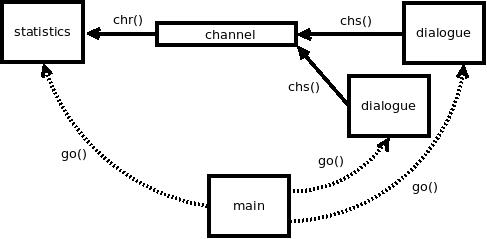

Go-style concurrency in C
In this tutorial you will develop a simple TCP "greet" server. The client is meant to connect to it via telnet. After doing so, the server will ask for their name, reply with a greeting and close the connection.
An interaction with our server will look like this:
$ telnet 127.0.0.1 5555 Trying 127.0.0.1... Connected to 127.0.0.1. Escape character is '^]'. What's your name? Bartholomaeus Hello, Bartholomaeus! Connection closed by foreign host.
In the process you will learn how to use coroutines, channels and the TCP library.
First, include libmill's header file. Later on you will want some functionality from the standard library, so include those headers as well:
#include <libmill.h> #include <errno.h> #include <stdio.h> #include <stdlib.h> #include <string.h> #include <unistd.h>
Add the main function. We'll assume, that the first argument, if present, will be the port number to be used by the server. If not specified, we will default to 5555:
int main(int argc, char *argv[]) {
int port = 5555;
if(argc > 1)
port = atoi(argv[1]);
return 0;
}
Now we can start doing the actual interesting stuff.
Libmill's tcplisten() function can be used to create listening TCP socket. The socket will be used to accept new TCP connections from the clients:
ipaddr addr = iplocal(NULL, port, 0);
tcpsock ls = tcplisten(addr);
if(!ls) {
perror("Can't open listening socket");
return 1;
}
iplocal() function is used to convert textual representation of an IP address to the actual address. In this case, the first argument can be used to specify local network interface to bind to. This is an advanced functionality and you likely won't need it. Conveniently, you can just ignore it and set the argument to NULL. The server will then bind to all available local network interfaces.
The second argument is, unsurprisingly, the port that the clients will connect to. When testing the program keep in mind that the range of valid port numbers is 1 to 65535 and binding to the ports from 1 to 1023 typically requires superuser privileges.
If tcplisten() fails it returns NULL and sets errno to appropriate error code. Libmill's TCP functions are in this respect very similar to standard POSIX APIs. What it means is that we can use standard POSIX mechanims -- perror() in this case -- to deal with errors.
If you run the program at this stage you'll find out that it finishes immediately rather than pausing and waiting for a connection from the client to arrive. That is what tcpaccept() function is for:
tcpsock as = tcpaccept(ls, -1);
The function returns the newly established connection.
The second argument of the function is a deadline. We'll cover the deadlines later on in this tutorial. For now, remember that constant -1 can be used to mean 'no deadline' -- if there is no incoming connection the call will block forever.
Finally, we want to handle many connections from the clients rather than a single one so we put the tcpaccept() call into an infinite loop.
For now we'll just print a message when new connection is established and close it immediately:
while(1) {
tcpsock as = tcpaccept(ls, -1);
printf("New connection!\n");
tcpclose(as);
}
The source code for this step can be found in tutorial/step1.c. All the following steps will be available in the same directory.
Build it like this:
$ gcc -o greetserver step1.c -lmill
Then run the resulting executable:
$ ./greetserver
The server now waits for a new connection. Establish one from a different terminal using telnet and check whether it works like expected:
$ telnet 127.0.0.1 5555
To test whether error hadling works all right try to use invalid port number:
$ ./greetserver 70000 Can't open listening socket: Invalid argument $
Everyting seems to work as expected. Let's now move to the step 2.
When new connection arrives, the first thing that we want to do is to send the "What's your name?" question to the client:
tcpsend(as, "What's your name?\r\n", 19, -1); tcpflush(as, -1);
First, note that tcpsend() works with bytes, not strings, very much like POSIX send(). Zero is a perfectly valid byte to send and thus we can't use it as a termination marker in the outgoing buffer. Instead we have to specify the size of the buffer explicitly (19 bytes).
Also note how the sending is done in two steps. The reason for that is that libmill is designed for extremely high performance and thus it tries to minimise the number of calls to the operating system. tcpsend() function stores the data in user space and tcpflush() pushes it to the kernel. That way, you can compose the message using many small, fast tcpsend() calls and then flush it to the network using a single system call.
char inbuf[256]; size_t sz = tcprecvuntil(as, inbuf, sizeof(inbuf), "\r", 1, -1);
This piece of code simply reads the reply from the client until it encounters a carriage return character ('\r') which is used, in combination with a newline ('\n'), by telnet to terminate individual lines.
Network protocols tend use size-prefixed fields, for example integer 12 followed by "Hello, world!" string. In such cases, tcprecv() function does a good job.
Other protocols though, mostly the text-based ones, rely on delimiters to separate the fields. In such case "Hello, world!" string would be sent first, followed by a newline to indicate that the string ends. Here, tcprecvuntil() function does a better job as it allows you to specify the character upon receiving which it will stop receiving further.
Finally, keep in mind that both sending and receiving TCP functions return the number of characters sent or received.
Having received the reply from the client, we can now construct the greeting and send it to the client. The analysis of this code is left as an exercise to the reader:
inbuf[sz - 1] = 0; char outbuf[256]; int rc = snprintf(outbuf, sizeof(outbuf), "Hello, %s!\r\n", inbuf); tcpsend(as, outbuf, rc, -1); tcpflush(as, -1);
Compile the program and check whether it works like expected!
Now that the program does what it is supposed to let's make it work in actual real-world-like environment.
Specifically, we don't want the client to be able to crash the server, so we have to handle the errors from TCP functions.
The functions related to sending and receiving report the errors in a bit different way. They return the number of bytes sent or received (as already seen in the previous step) and at the same time they set the errno to indicate success or failure.
Imagine the case where we are reading data from a TCP connection. We want 4 bytes. The peer sends 4 bytes and closes the connection. tcprecv() function returns the size of received buffer (4) but sets errno to ECONNRESET to indicate that the connection was closed. If there's no error errno is set to zero.
In our program we'll handle the errors silently, by jumping to the cleanup code (tcpclose(as)):
while(1) {
tcpsock as = tcpaccept(ls, -1);
tcpsend(as, "What's your name?\r\n", 19, -1);
if(errno != 0)
goto cleanup;
...
cleanup:
tcpclose(as);
}
We should also handle errors from tcpaccept(). Given that in such case there's no connection established yet, we'll just retry instead of jumping to the cleanup code:
tcpsock as = tcpaccept(ls, -1);
if(!as)
continue;
At this point the client can't crash the server, but it can block it. Do the following experiment:
The reason for the behaviour is that the program doesn't even start accepting new connection until the entire dialogue with the client is finished. What we want instead is running any number of dialogues with the clients in parallel. And that is where coroutines kick in.
Coroutines are very much like threads. They are very lightweight though. Measuring on a modern hardware you can run up to something like twenty million libmill coroutines per second.
Coroutines are defined using coroutine keyword and launched using go() construct.
In our case we can move the code performing the dialogue with the client into a separate function and launch it as a coroutine:
coroutine void dialogue(tcpsock as) {
tcpsend(as, "What's your name?\r\n", 19, -1);
...
tcpclose(as);
}
int main(int argc, char *argv[]) {
...
while(1) {
tcpsock as = tcpaccept(ls, -1);
if(!as)
continue;
go(dialogue(as));
}
}
Let's compile it and try the initial experiment once again. As can be seen, one client now cannot block another one. Great. Let's move on.
File descriptors can be a scarce resource. If a client connects to greetserver and lets the dialogue hang without entering the name, one file descriptor on the server side is, for all practical purposes, wasted.
To deal with the problem we are going to timeout the whole client/server dialogue. If it takes more than 10 seconds, server will kill the connection straight away.
One thing to note is that libmill uses deadlines rather than more conventional timeouts. In other words, you specify the time instant when you want the operation to finish rather than maximum time it should take to run. To construct deadlines easily, libmill provides now() function. The deadline is expressed in milliseconds so you can create a deadline 10 seconds in the future like this:
int64_t deadline = now() + 10000;
Further, you have to modify all the potentially blocking function calls in the program to take the deadline parameter. For example:
tcpsend(as, "What's your name?\r\n", 19, deadline);
if(errno != 0)
goto cleanup;
tcpflush(as, deadline);
if(errno != 0)
goto cleanup;
Note that errno is set to ETIMEDOUT in case the deadline is reached. However, we treat all the errors in the same way (by closing the connection) and thus we don't have to do any specific provisions for the deadline case.
Imagine we want to keep statistics in the greetserver: Number of overall connections, number of those that are active at the moment and number of those that have failed.
In a classic thread-based application we would keep the statistics in global variables and synchronise access to them using mutexes.
With libmill, however, we are aiming at "concurrency by message passing" and thus we are going to implement the feature in a different way.
We will create a new coroutine that will keep track of the statistics and a channel that will be used by dialogue() coroutines to communicate with it:

First, we define values that will be passed through the channel:
#define CONN_ESTABLISHED 1 #define CONN_SUCCEEDED 2 #define CONN_FAILED 3
Now we can create the channel and pass it to dialogue() coroutines:
coroutine void dialogue(tcpsock as, chan ch) {
...
}
int main(int argc, char *argv[]) {
...
chan ch = chmake(int, 0);
while(1) {
tcpsock as = tcpaccept(ls, -1);
if(!as)
continue;
go(dialogue(as, ch));
}
}
The first argument to chmake() is the type of the values that will be passed through the channel. In our case, they are simple integers.
The second argument is the size of channel's buffer. Setting it to zero means that the channel is "unbuffered" or, in other words, that the sending coroutine will block each time until the receiving coroutine can process the message.
This kind of behaviour could, in theory, become a bottleneck, however, in our case we assume that statistics() coroutine will be extremely fast and not likely to turn into a performance bottleneck.
At this point we can implement the statistics() coroutine that will run forever in a busy loop and collect the statistics from all the dialogue() coroutines. Each time the statistics change, it will print them to stdout:
coroutine void statistics(chan ch) {
int connections = 0;
int active = 0;
int failed = 0;
while(1) {
int op = chr(ch, int);
if(op == CONN_ESTABLISHED)
++connections, ++active;
else
--active;
if(op == CONN_FAILED)
++failed;
printf("Total number of connections: %d\n", connections);
printf("Active connections: %d\n", active);
printf("Failed connections: %d\n\n", failed);
}
}
int main(int argc, char *argv[]) {
...
chan ch = chmake(int, 0);
go(statistics(ch));
...
}
chr() function will retrieve one message from the channel or block if there is none available. At the moment we are not sending anything to the channel, so the coroutine will simply block forever.
To fix that, let's modify dialogue() coroutine to send some messages to the channel. chs() function will be used to do that:
coroutine void dialogue(tcpsock as, chan ch) {
chs(ch, int, CONN_ESTABLISHED);
...
cleanup:
if(errno == 0)
chs(ch, int, CONN_SUCCEEDED);
else
chs(ch, int, CONN_FAILED);
tcpclose(as);
}
Now compile the server and run it. Create a telnet session and let it timeout. The output on the server side will look like this:
$ ./greetserver Total number of connections: 1 Active connections: 1 Failed connections: 0 Total number of connections: 1 Active connections: 0 Failed connections: 1
The first block of text is displayed when the connection is established: There have been 1 connection ever and 1 is active at the moment.
Second block shows up when the connection times out: There have been 1 connection overall, there are no active connection any longer and one connection have failed in the past.
Our new server does what it is supposed to do. With no context switching it has performance that can never be matched by a multithreaded server. But it has one major drawback. It runs only on one CPU core. Even if the machine has 64 cores it runs on one of them and leaves 63 cores unutilised.
If the server is IO-bound, as it happens to be in this tutorial, it doesn't really matter. However, if it was CPU-bound we would face a serious problem.
What we are going to do in this step is to create one server process per CPU core and distribute the incoming connections among the processes. That way, each process can run on one CPU core, fully utilising resources of the machine.
First, let's do some preparatory work. We want statistics to print out the process ID so that we can distinguish between outputs from different instances of the server. (And yes, it would be better to aggregate the statistics from all instances, but that's out of scope of this tutorial and left as an exercise to the reader.)
coroutine void statistics(chan ch) {
...
printf("Process ID: %d\n", (int)getpid());
printf("Total number of connections: %d\n", connections);
printf("Active connections: %d\n", active);
printf("Failed connections: %d\n\n", failed);
...
}
Second, we won't try to estimate the number of CPU cores on the machine and rather let the user specify it:
int main(int argc, char *argv[]) {
int port = 5555;
int nproc = 1;
if(argc > 1)
port = atoi(argv[1]);
if(argc > 2)
nproc = atoi(argv[2]);
...
}
Now we can do the actual magic. The idea is to open the listening socket in the first process, then to fork all the remaining processes, each inheriting the socket. Each process can then tcpaccept() connections from the listening socket making OS work as a simple load balancer, dispatching connections evenly among processes.
int main(int argc, char *argv[]) {
...
int i;
for (i = 0; i < nproc - 1; ++i) {
pid_t pid = fork();
if(pid < 0) {
perror("Can't create new process");
return 1;
}
if(pid > 0)
break;
}
...
}
The code above should be inserted right after the tcplisten() call.
One thing to note is that we fork number of processes requested by the user short by one. The reason is that the parent process itself is going to act as one instance of the server after if finishes the fork loop.
Now we can check it in practice. Let's run it on 4 CPU cores:
./greetserver 5555 4
Check the processes from a different terminal using ps:
$ ps -a PID TTY TIME CMD 16406 pts/14 00:00:00 lt-greetserver 16420 pts/14 00:00:00 lt-greetserver 16421 pts/14 00:00:00 lt-greetserver 16422 pts/14 00:00:00 lt-greetserver 16424 pts/7 00:00:00 ps
Telnet to the server twice to see whether the connections are dispatched to different instances:
Process ID: 16420 Total number of connections: 1 Active connections: 1 Failed connections: 0 Process ID: 16422 Total number of connections: 1 Active connections: 1 Failed connections: 0
Yay! Everything works as expected.
Enjoy your time with the library and send any questions you may have to libmill@freelists.org